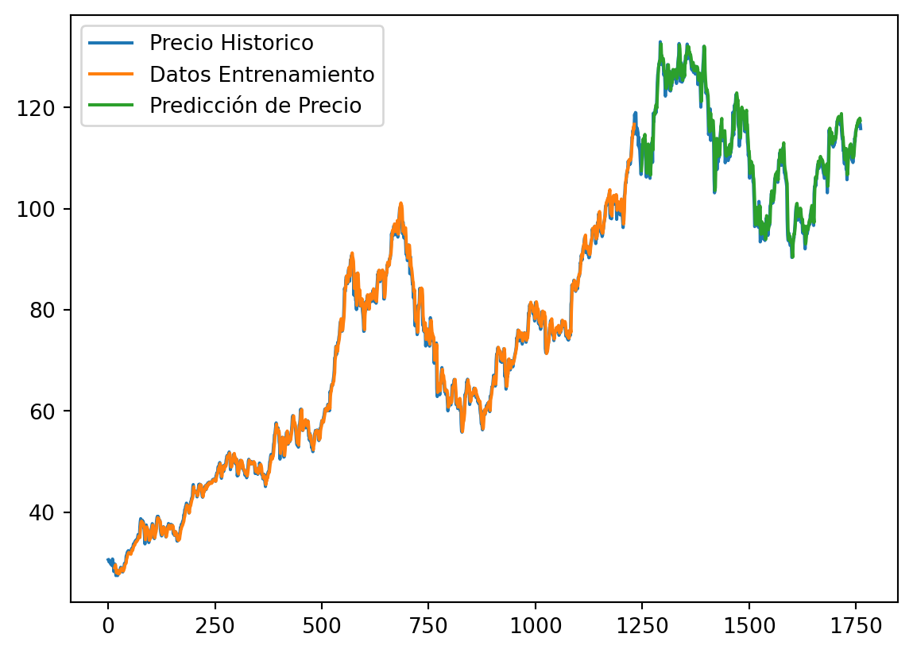

Las redes neuronales recurrentes son una arquitectura bastante empleada puesto que emplean los output de salida para retroalimentarse y continuar prediciendo un output.
Usos
Principalmente sirve para contextos donde el orden importa y sirve como predictor recurrente (series de tiempo, textos, audios)
Sin embargo, ¿que tanto recordar el pasado? ¿cuál es la consecuencia en el rendimiento y demora de estimación?
Sus tipos más utilizados son LSTM y GRU
En este post nos enfocaremos en utilizar, describir y simular la red LSTM.
Aplicaciones
Predictor de la siguiente palabra
Series de tiempo
No recomendable para transversal
Red de Memoria de Corto y Largo Plazo (LSTM)
Las redes LSTM (Long Short-Term Memory) son un tipo especial de redes neuronales recurrentes diseñadas con celdas de memoria que mantienen su estado a largo plazo. El principal objetivo de este tipo de redes es la solución del desvanecimiento del gradiente experimentado en las redes recurrentes. Globalmente, el flujo computacional de LSTM se ve de la siguiente manera:
Flujo computacional de LSTM
Las redes neuronales recurrentes pasan solo un estado oculto \(h_t\) a través de cada iteración. Pero LSTM pasa dos vectores: \(h_t-\)estado oculto (memoria a corto plazo) y\(c_t-\)estado celular (memoria a largo plazo).
Las salidas de la celda LSTM se calculan a traves de las fórmulas que se muestran a continuación:
\(i_t\)(puerta de entrada) es la variable que se utiliza para actualizar el estado de la celda \(c_t\). El estado previamente oculto \(c_t\) y la entrada secuencial actual \(x_t\) se dan como entrada a una función sigmoidea. Si la salida está cerca a uno, más importante es la información.
\(f_t\)(puerta de olvido) es la variable que decide que información debe olvidarse en el estado de celda \(c_t\). El estadp previamente oculto \(h_t\) y la entrada de secuencia \(x_t\) se dan como entradas a una función sigmoidea. Si la salida \(f_t\) está cerca de cero, entonces la información puede olvidarse, mientras que si la salida esta cerca de uno, la información debe almacenarse.
\(g_t\) representa información importante potencialmente nueva para el estado celular \(c_t\).
\(c_t\)(estado celular) es una suma de:
Estado de celada anterior \(c_{t-1}\) con alguna información olvidada \(f_t\).
Nueva información de \(g_t\).
\(o_t\)(puerta de salida) es la variable para actualizar el estado oculto \(h_t\).
\(h_t\)(estado oculto) es el siguiente estado oculto que se calcula seleccionando la información importante \(o_t\) del estado de celda \(c_t\).
La siguiente figura muestra el gráfico computacional de la celdaLSTM:
Gráfico computacional de LSTM
La red LSTM tiene los siguientes parámetros, que se ajustan durante el entrenamiento:
El pronóstico que realizamos para poner en marcha nuestro modelo LSTM es sobre el precio de cierre (close) del índice bursátil de Apple (AAPL). La librería o paquete principal para construcción de nuestro modelo fue Tensorflow. A continuación el lector puede apreciar la codificación que se llevó a cabo para poder construir nuestro modelo.
C:\Users\juani\AppData\Local\Temp\ipykernel_15680\3683430178.py:5: FutureWarning:
The pandas.datetime class is deprecated and will be removed from pandas in a future version. Import from datetime module instead.
# Graficamos el precio de cierre (Close) de AAPLplt.figure(figsize=(15, 5));plt.subplot(1,2,1);plt.plot(df[df.symbol =='EQIX'].close.values, color='green', label='close')plt.title('Indice de AAPL')plt.xlabel('días')plt.ylabel('precio de cierre (Close)')plt.legend(loc='best')
<matplotlib.legend.Legend at 0x1eed0f0af50>
# data_df es nuestra data que comenzara a tratarse y posterioremente con la cual# se estara trabajando el resto del proyectodata_df = pd.read_csv("prices-split-adjusted.csv", index_col =0)data_df.head()
C:\Users\juani\AppData\Local\Temp\ipykernel_15680\1763401402.py:2: FutureWarning:
In a future version of pandas all arguments of DataFrame.drop except for the argument 'labels' will be keyword-only.
# create_dataset: convertir una matriz de valores en una matriz de conjunto de datosdef create_dataset(dataset, look_back=15): dataX, dataY = [], []for i inrange(len(dataset)-look_back-1): a = dataset[i:(i+look_back), 0] dataX.append(a) dataY.append(dataset[i + look_back, 0])return np.array(dataX), np.array(dataY)
# Graficamos los resultados trainPredictPlot = np.empty_like(dataset)trainPredictPlot[:, :] = np.nantrainPredictPlot[look_back:len(trainPredict)+look_back, :] = trainPredicttestPredictPlot = np.empty_like(dataset)testPredictPlot[:, :] = np.nantestPredictPlot[len(trainPredict)+(look_back*2)+1:len(dataset)-1, :] = testPredictplt.plot(min_max_scaler.inverse_transform(dataset), label ="Precio Historico")plt.plot(trainPredictPlot, label ="Datos Entrenamiento")plt.plot(testPredictPlot, label ="Predicción de Precio")plt.legend()plt.title('Indice de AAPL')plt.xlabel('días')plt.ylabel('precio de cierre (Close)')plt.show()

Un ejercicio interesante para el lector podría ser, asumir el reto de tratar de mejorar las métricas RMSE para Train como para el Test. Una posible alternativa es utilizar más capas intermedias. Intenta asumir el reto y comenta tus resultados aquí en el post.